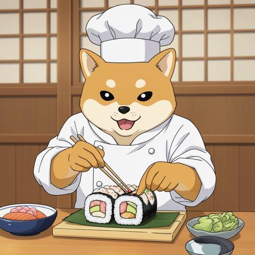
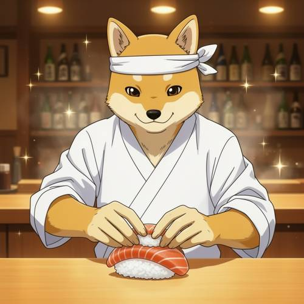
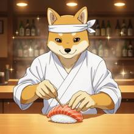
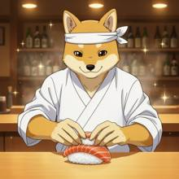

Grammar — In the Japanese animation style, an anthropomorphic Shiba Inu wearing
In the Japanese animation style, an anthropomorphic Shiba Inu wearing a chef's uniform is skillfully pinching an exquisite sushi with his front paws.

Direct — one call, no iteration

Continuum — Kimi K3 + FLUX.2-dev
Judge — Direct
PASSGrammar - Pronoun Reference — The image depicts a single anthropomorphic Shiba Inu, which is the subject referred to by the pronoun "his". The character is presented without specific gender markers, which does not contradict the use of the pronoun in the prompt.
PASSStyle — The image is rendered in a style consistent with Japanese animation, featuring clean line art, cel-shading, and a character design with large eyes and simplified features typical of anime.
FAILAction - Hand (Character/Anthropomorphic) — The anthropomorphic Shiba Inu is not pinching sushi with its front paws. Instead, its right paw is holding a pair of chopsticks to place something on a sushi roll, and its left paw, which is clearly depicted with four fingers and is not distorted, is resting on the side of the roll to steady it.
Judge — Continuum
PASSGrammar - Pronoun Reference — The pronoun 'his' refers to the anthropomorphic Shiba Inu. The image depicts a single anthropomorphic Shiba Inu, which is the character to whom the pronoun 'his' applies. The visual content is consistent with this pronoun reference.
PASSStyle — The image is rendered in a style characteristic of Japanese animation, featuring clean and defined line art, cel-style shading, and a character design with large, expressive eyes typical of anime.
PASSAction - Hand (Character/Anthropomorphic) — The anthropomorphic Shiba Inu's front paws are depicted as hands with five digits each. The hands are shown in the act of preparing a piece of nigiri sushi. The fingers are well-proportioned and correctly formed, without any visible distortion, breakage, or missing digits.
What the agent did
Thinking
The user wants an anime-style image of an anthropomorphic Shiba Inu chef making sushi. Let me generate with flux2-dev.
Model
I'll generate this anime-style image of a Shiba Inu sushi chef.
Step 1 — `generate_image`
{
"prompt": "Japanese anime style illustration, cel-shaded, vibrant colors. An anthropomorphic Shiba Inu dog wearing a traditional white Japanese chef's uniform (happi coat) and a white chef's headband (hachimaki), standing behind a wooden sushi counter. He is skillfully pinching an exquisite piece of nigiri sushi (fresh salmon over rice) between his front paws, shaping it with focused concentration and a slight proud smile. Warm restaurant lighting, wooden sushi bar interior background with shelves of sake bottles softly blurred, steam and sparkling accent highlights, detailed fur, expressive anime eyes, high quality anime key visual.",
"model": "flux2-dev"
}
Result img_0

Thinking
The image is good overall — anime Shiba Inu chef, white uniform, hachimaki, sushi counter, sake bottles. Issue: he's using a thin stick/chopstick rather than pinching the sushi with his front paws. The prompt says "skillfully pinching an exquisite sushi with his front paws." The paws look like human hands actually — furry but hand-like. The key requested action: pinching sushi with front paws. Let me edit to remove the stick and have both paws shaping/pinching the nigiri.
Model
The image captures the anime style, Shiba Inu chef, uniform, and sushi bar setting well. However, he's using a thin stick rather than pinching the sushi with his front paws as requested. Let me fix that.
Step 2 — `edit_image`
{
"image": "img_0",
"model": "flux2-dev",
"prompt": "Remove the thin wooden stick from his right paw. Both furry front paws are now gently pinching and shaping the salmon nigiri sushi from both sides, fingers pressing the rice, in a classic sushi-chef hand-forming gesture."
}
Result img_1

Thinking
Now both paws are pinching/shaping the sushi. All prompt elements are present: anime style, anthropomorphic Shiba Inu, chef uniform, pinching exquisite sushi with front paws. This looks good. Mark as best and stop.
Model
The edit worked perfectly. Now both furry front paws are gently pinching and shaping the salmon nigiri in a classic sushi-chef gesture. All elements of the prompt are present: - ✅ Japanese anime style with cel-shading and warm tones - ✅ Anthropomorphic Shiba Inu with expressive anime eyes - ✅ White chef's uniform (happi coat) and hachimaki headband - ✅ Skillfully pinching an exquisite salmon nigiri with his front paws - ✅ Sushi bar setting with sake bottles and sparkling highlights
Step 3 — `mark_best`
{
"image": "img_1",
"reason": "All prompt elements correct: anime style, Shiba Inu chef in uniform, pinching sushi with both front paws in a proper hand-forming gesture."
}
Model
The image is complete and marked as the final result. The anthropomorphic Shiba Inu sushi chef is now skillfully pinching the salmon nigiri with both front paws, rendered in a clean, vibrant Japanese animation style with a cozy sushi bar atmosphere.